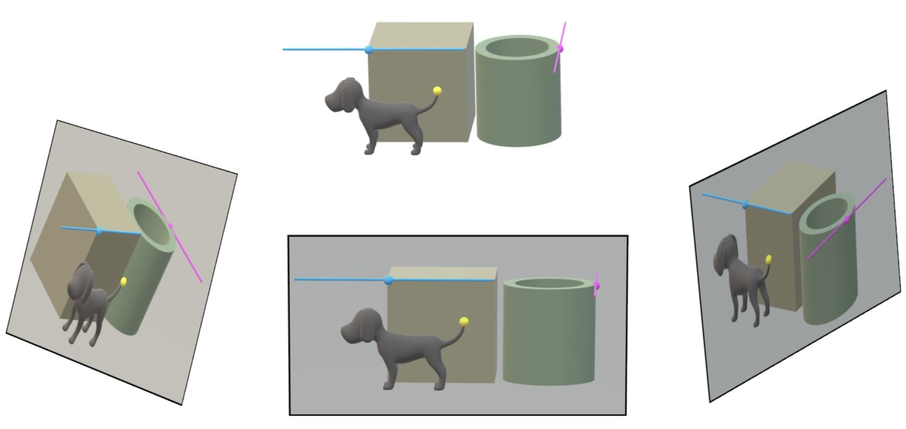
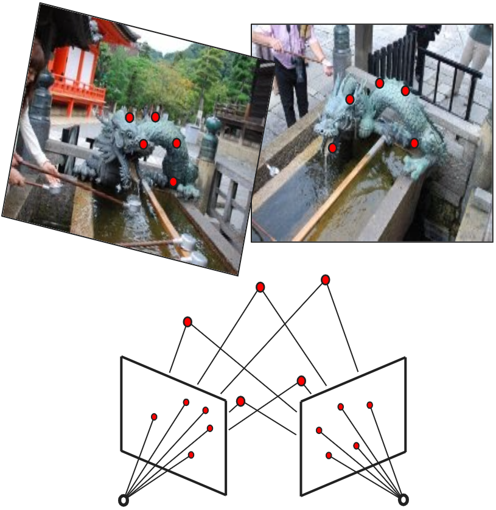

KTH Royal Institute of Technology, Stockholm
Application deadline • January 8, 2024 11:59 PM CET
How to apply• TBA
Contact • Kathlén Kohn kathlen@kth.se
The successful candidate will pursue a PhD project at the intersection of algebraic geometry and computer vision under the supervision of Kathlén Kohn. The position is a time-limited, full-time, five year position starting August 2024 or at an agreed upon date. The position is fully funded for four years and will be extended to five years by assigning teaching duties. The student will be enrolled in the Doctoral program in Mathematics. The position is financed within the Wallenberg Autonomous Systems and Software Program (WASP), and the student will also participate in the WASP graduate school. Through this program the student will have a wide variety of opportunities to interact with other researchers and industry collaborators, including events such as conferences and PhD courses. Moreover, the successful candidate will be part of the vibrant and diverse research groups in algebraic geometry in Stockholm. Students interested in fields related to the following are encouraged to apply: algebra, geometry, computer vision, artificial intelligence.
 The overall goal will be to identify the geometric structures underlying the problem of 3D reconstruction from images, and to investigate those structures using algebraic methods. This will deepen our understanding of 3D reconstruction and help in the design of better reconstruction algorithms. The research projects will focus on settings where efficient 3D reconstruction is out of reach for state-of-the-art algorithms, such as 3D reconstruction from images taken by moving cameras with rolling-shutter sensors. For more details on the interplay between algebraic geometry and computer vision, see Chapter 13 in the textbook Metric Algebraic Geometry or the more thorough survey Snapshot of Algebraic Vision.